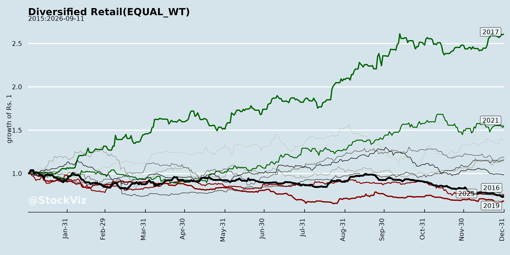
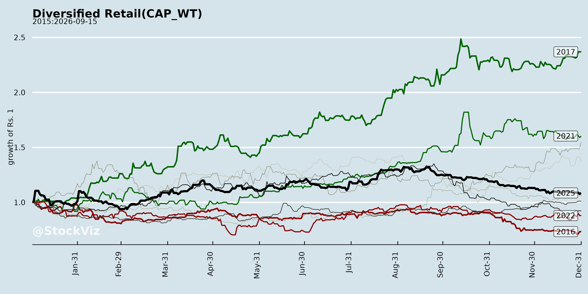
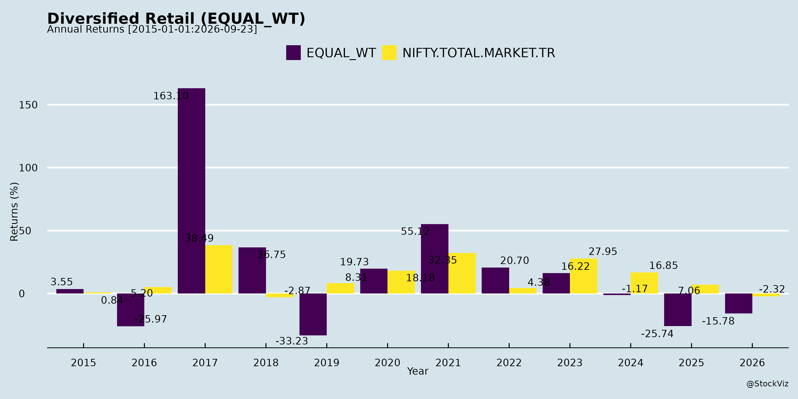
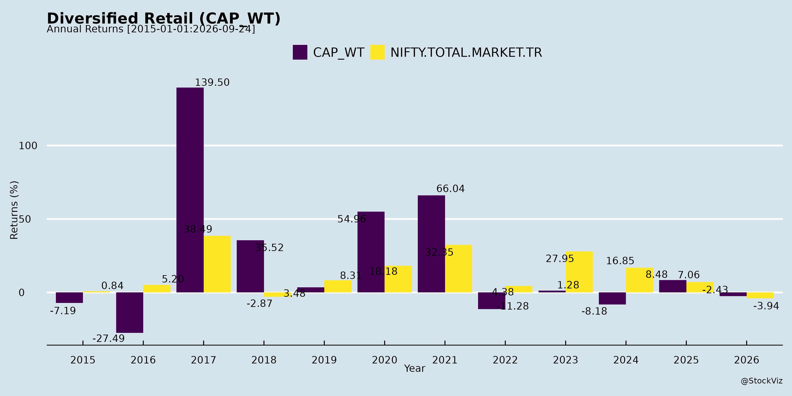
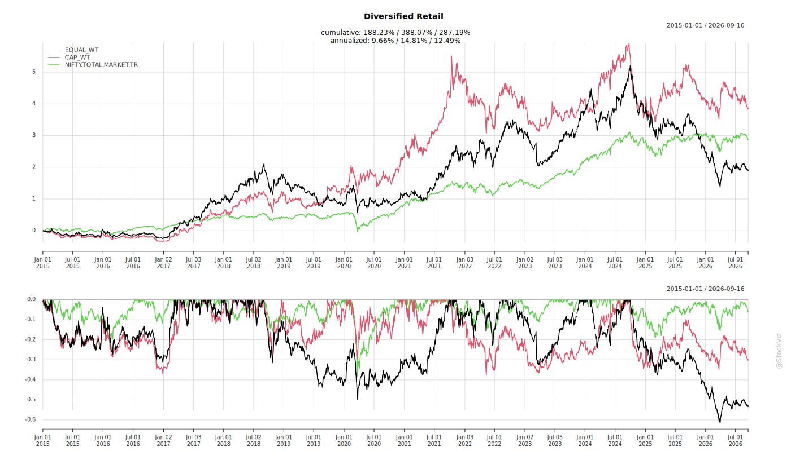
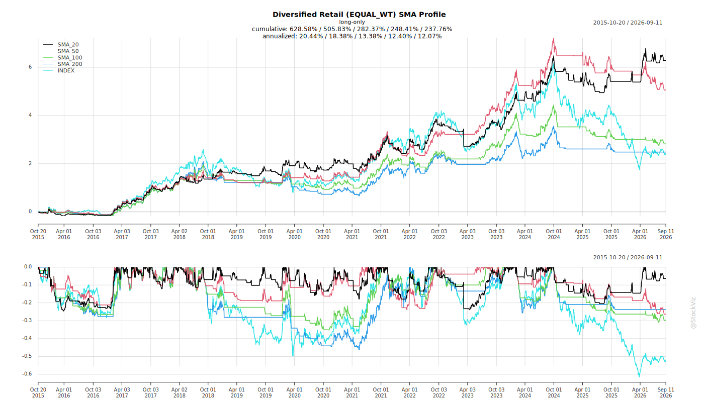
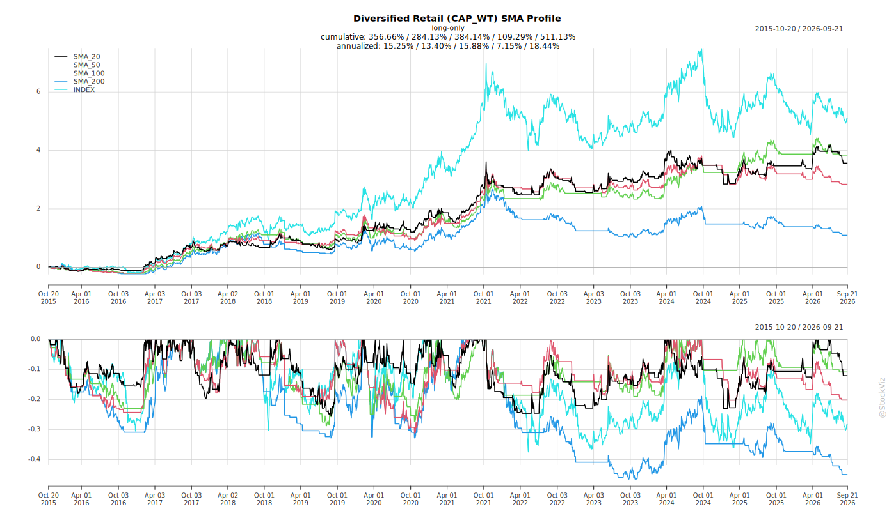
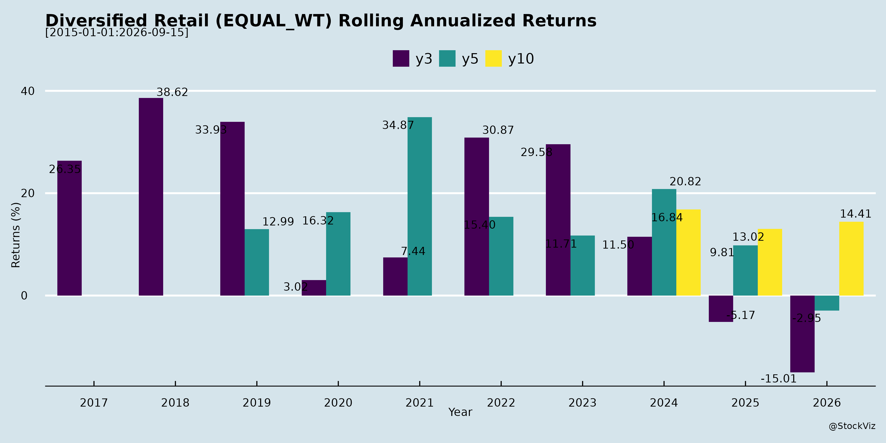
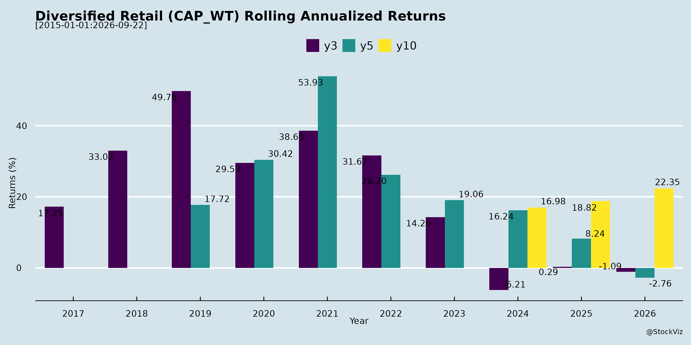

Annual Returns




Cumulative Returns and Drawdowns

SMA Scenarios


Current Distance from SMA
Rolling Returns


EBIT (% of Industry Total)
Revenue (% of Industry Total)
Analysis of Indian Diversified Retail Sector
The Indian diversified retail sector (encompassing grocery, FMCG, consumer electronics, apparel, and premium formats) is undergoing transformation amid intense competition from quick commerce (QC), omnichannel shifts, and macroeconomic tailwinds. Insights from recent earnings transcripts (Q1/Q2 FY26) of key players like DMart (Avenue Supermarts), Electronics Mart India, Spencer’s Retail, Patel Retail, V-Mart Retail, Vishal Mega Mart, and Shoppers Stop highlight a resilient yet challenged landscape. The sector benefits from India’s consumption growth but faces execution hurdles. Below is a structured summary of headwinds, tailwinds, growth prospects, and key risks.
Headwinds (Challenges)
- Quick Commerce Disruption: QC (e.g., Blinkit, Zepto) erodes offline like-for-like (LFL) sales. DMart’s LFL dropped to 8.4% (FY25, vs. 9.9% prior); Spencer’s offline flat QoQ; Electronics Mart notes NCR scaling pressures. Migration to convenience hits neighborhood stores (Spencer’s Nature’s Basket revenues flat).
- Margin Pressures: Deflation in staples (DMart), extra discounting post-GST cuts (Electronics Mart gross margins down), wage inflation (all), and high employee costs (Electronics Mart up despite SSSG). Spencer’s EBITDA flat due to lower other income.
- Supply Chain & Inventory Issues: GST disruptions (Sept’25 slowdown across DMart, Electronics Mart, Spencer’s); excess AC inventory (~₹300cr, Electronics Mart); availability hits (Nature’s Basket imports).
- Real Estate Constraints: High costs, micro-market challenges (DMart regrets slower expansion; could have been 600-650 stores). Spencer’s optimized by closures but no aggressive adds.
- Category Mix Shifts: GM&A dip (DMart: 22-23% vs. pre-pandemic 27-28%); premium migration strains value formats.
Tailwinds (Positive Factors)
- Macro Boosters: Lower GST (appliances/TVs), interest rates, income tax slabs fuel demand (Electronics Mart: 15-38% cluster growth post-GST; DMart resilient at 16.7% sales growth).
- Store Optimization: Closures of loss-makers (Spencer’s: expenses down ₹30cr YoY); mature stores strong (Electronics Mart: 6.8% EBITDA vs. 3% new stores).
- Omnichannel Momentum: DMart Ready +21% growth; Spencer’s Jiffy +30% QoQ (₹52cr, positive unit economics); Patel app 3.5% retail sales.
- Private Labels & Efficiency: DMart progressing (long game); Patel 17% retail revenue (aim 35%); Spencer’s loyalty (50k members, 20% sales from 8-9% base).
- Category Resilience: Premiumization (Electronics Mart: large appliances 38-43%); D2C traction (DMart equalizes platforms).
Growth Prospects
| Store Expansion |
DMart: 50+ stores/Yr, North India focus (UP ramp-up); Electronics Mart: 30 more FY26 (Telangana/AP/NCR); Patel: 60+ by FY27; V-Mart/Vishal: Gurugram meets signal continuity. |
15-20% CAGR (DMart 10-20% network growth); low-double-digit FY26 (Electronics Mart). |
| Digital/Omnichannel |
Spencer’s Jiffy: 10k orders/day (₹21-22cr/month); DMart Ready: 24 cities, 6-hr delivery; Patel: Same-day upgrades. |
Online 16-17% Nature’s Basket mix; Jiffy +50% YoY. |
| Geographic |
North whitespaces (DMart UP/Punjab); Tier 2/3 (Electronics Mart NCR +38%; Patel Pune). |
NCR scaling (Electronics Mart 3-4% margins FY26). |
| Private Labels/Exports |
Patel: 52% non-retail private labels; DMart cautious expansion. |
Margins to 35% retail (Patel); exports ₹50cr order book. |
| SPSF Efficiency |
Spencer’s: ₹1,600 (Q2FY26, +33% YoY); aim ₹2,000-2,300. |
EBITDA via throughput (no heavy capex). |
Overall Outlook: 15-20% revenue CAGR feasible via 10-15% network + mid-single LFL + digital (5-10%). EBITDA margins steady 5-8% (store-level breakeven FY26 offline).
Key Risks
- QC Escalation: 1-1.5% LFL drag (DMart); potential deeper cannibalization if QC penetrates Tier 2/3.
- Execution Delays: Real estate scarcity (DMart North); new store ramp-up (Electronics Mart 131 immature stores).
- Margin Erosion: Discounting wars, wage/real estate inflation; inventory liquidation (ACs).
- Macro/Seasonal: Weak summers (ACs 10% growth risk); monsoons/rains (Spencer’s Puja hit).
- Balance Sheet: Debt for expansion (DMart open to “reasonable”; Spencer’s promoter funding); working capital (Electronics Mart 76 days).
- Competition: D2C/FMCG shifts (DMart); premium online (Nature’s Basket).
Sector Summary: Bullish long-term (₹1.8-2k stores TAM per DMart; consumption compounding), but near-term cautious (QC headwinds cap LFL; focus on omnichannel/private labels). Leaders like DMart resilient via scale/value; others (Spencer’s, Electronics Mart) pivot to digital/store optimization. Steady 15%+ growth possible with 6-8% EBITDA margins if execution holds. Monitor QC unit economics and North expansion.
Investor
asof: 2025-11-29
Indian Diversified Retail Sector Analysis
Executive Summary
The Indian diversified retail sector (grocery, FMCG, general merchandise, electronics, premium/gourmet) exhibits resilience amid intensifying competition, driven by value-conscious consumers, urbanization, and tier-2/3 city penetration. Key players like DMart, Spencer’s, Electronics Mart, Patel Retail, and others report steady revenue growth (10-20% YoY), stable margins (5-8% EBITDA), and omnichannel pivots. Tailwinds include GST reductions, private label expansion, and offline-online synergy. Headwinds stem from quick commerce (QC) disruption and cost pressures. Growth prospects are robust (15-25% CAGR via 10-20% annual store adds, e-com scaling to 10-20% of sales), but risks like execution delays and macros loom large. Sector poised for 15-20% revenue CAGR over FY26-28, with profitability hinging on SPSF improvement (INR2,000-3,000/sq ft) and QC mitigation.
Headwinds
- Quick Commerce (QC) Disruption: Pervasive threat to grocery/FMCG (DMart: 1-1.5% SSSG impact; Spencer’s: offline cannibalization). QC offers 10-30 min delivery at similar pricing, eroding offline traffic (5-10% in metros). Players counter via faster delivery (Spencer’s Jiffy: 30-min) but incur losses.
- Margin Pressures: Deflation in staples (DMart: volume pickup but mix shift hurts), aggressive discounting (Electronics Mart: GST deferral led to extra discounts), wage inflation (20-25% employee cost rise post-COVID), and high real estate (INR10-12/sq ft rent target; ownership preferred).
- Store Ramp-Up & Expansion Costs: New stores (<4 yrs old) drag margins (Electronics Mart: 3% EBITDA vs. 6.8% mature; DMart: North India white spaces but supply chain challenges). Rapid adds (DMart: >50/yr; Electronics Mart: 30 in FY26) inflate capex/depreciation.
- Seasonality/Inventory Risks: Weather-dependent (Electronics Mart: INR200cr AC inventory post-bad summer); GST volatility (Sep’25 deferrals).
- Category Shifts: GM/apparel dip (DMart: 22-23% mix); premium migration online (Spencer’s Nature’s Basket: flat QoQ).
Tailwinds
- Consumer Resilience & Value Focus: SSSG 8-12% (DMart: 8.4%; Electronics Mart: 11.4% Q2); premiumization in appliances/mobiles (Electronics Mart: large AC/TV ASP up). Lower GST (electronics/appliances), tax cuts boost disposable income.
- Private Labels & Vertical Integration: Margin accretive (DMart: slow but steady; Patel: 17%→35%; Spencer’s: efficiency focus). Processing/exports stabilize (Patel: 30% revenue from exports).
- Geographic Expansion: Tier-2/3/North focus (DMart: UP/North white spaces; V-Mart: Gurugram meets; Electronics Mart: NCR 38% growth).
- Omnichannel Momentum: E-com growth (DMart Ready: 21%; Spencer’s Jiffy: 30% QoQ, INR52cr Q2; Patel app: 3.5% retail sales). Loyalty programs boost retention (Spencer’s: 50k members, 20% sales).
- Operational Efficiencies: SPSF up (Spencer’s: INR1,600 Q2 vs. INR1,200 YoY); cluster model (Patel: 60-100km radius); mature stores profitable (Electronics Mart: 6.8% EBITDA).
Growth Prospects
- Store Network Expansion: 10-20% annual adds (DMart: >50; Electronics Mart: 30 FY26; Patel: 60+ by FY27; Spencer’s: optimization over adds). TAM: 1,800-2,000 stores (DMart); Maharashtra/Pune focus (Patel).
- E-Com/Quick Delivery Scaling: 20-50% YoY (DMart Ready: 24 cities; Spencer’s Jiffy: 10k orders/day target; Patel: same-day upgrades). Out-of-store mix to 15-20% (Nature’s Basket).
- Category/Revenue Mix: Private labels 20-35%; premium/large appliances/mobiles (Electronics Mart: 38-48% mix); exports (Patel: INR50cr order book).
- Revenue CAGR: 15-20% FY26 (DMart: low double-digit; Patel: 15-20%; Electronics Mart: low teens). SPSF to INR2,000-3,000 (Spencer’s target).
- EBITDA/PAT Expansion: 6-8% margins via leverage (mature stores); ROCE 10-18% (DMart: 17.8%).
| Revenue Growth |
10-17% |
12-20% |
| SSSG |
5-9% |
8-12% |
| EBITDA Margin |
5-8% |
6-8% |
| Store Adds |
50+ |
50-100 |
Key Risks
- QC Escalation: 1-2% SSSG erosion; potential 10-20% grocery shift if 10-min delivery scales to tier-2/3.
- Execution on Expansion: Ramp-up delays (2-4 yrs to maturity); real estate scarcity (DMart: North focus).
- Macro/External: Inflation/deflation volatility; poor weather (ACs); geopolitical (Patel exports).
- Balance Sheet Leverage: Debt for capex (Electronics Mart: ROCE 9.8%); dilution risk (Spencer’s: promoter funding).
- Vendor/Supply Chain: Concentration (top vendors); GST/availability disruptions.
- Online Losses: Scaling without profitability (Spencer’s Jiffy: INR1.5-3cr/month loss at INR20-25cr sales).
Outlook: Sectorally positive (15-20% CAGR) with value players (DMart, Patel) leading offline; omnichannel (Spencer’s) gaining edge. Monitor QC unit economics and SPSF for sustained profitability.
Press Release
asof: 2025-11-29
Indian Diversified Retail Sector Analysis (Q2/H1 FY26)
Based on Q2/H1 FY26 results from DMart, Vishal Mega Mart, V-Mart, Shoppers Stop, and Patel Retail.
The sector demonstrates resilient revenue growth (10-22% YoY) driven by store expansions, positive SSSG (6.8-12.8%), and value/premium strategies. Value retailers (DMart, Vishal, V-Mart, Patel) outperform premium/diversified peers (Shoppers Stop) amid consumption recovery, but margins face pressure. Overall, H1 revenue averages ~16% growth, with EBITDA/PAT improving variably.
Tailwinds (Supportive Factors)
- Strong Revenue Momentum: Consistent YoY growth (DMart 15.4%, Vishal 22.4%, V-Mart 22%, Shoppers Stop 10%, Patel 15%). SSSG healthy (DMart older stores 6.8%, Vishal/V-Mart ~11-12%), signaling like-for-like demand recovery.
- Expansion Execution: Aggressive store adds (DMart +8 Q2/+17 H1; Vishal +28 Q2/+51 H1; V-Mart +23 net Q2; Patel +1; Shoppers +7 incl. new formats). Total stores: DMart 432, Vishal 742, V-Mart 533.
- Category/Channel Strength: Own brands dominant (Vishal 74.7%, Patel private labels); Beauty premiumization (Shoppers +22%); Quick commerce/omni (Vishal in 695 stores, DMart Ready expansion).
- Macro Support: GST reforms (benefits passed on by DMart/Vishal); Festive/wedding season tailwinds; Govt sops/rural revival expected to boost Q3/Q4.
- Operational Leverage: EBITDA growth outpaces revenue in most (V-Mart +85%, Patel +31%, Vishal Adj +34%).
Headwinds (Challenges)
- Margin Compression: EBITDA margins dip/squeeze (DMart 7.6% vs 7.9%; Shoppers core stable but overall pressured); PAT margins down (DMart 4.6% vs 5.0%). High opex from marketing/loyalty (Shoppers), ESOP/IndAS 116 adjustments (Vishal).
- Profitability Volatility: Losses persist/improve marginally (Shoppers PAT -₹23 Cr Q2; V-Mart -₹9 Cr but +84% YoY); E-com/value fashion slowdown (DMart ceased 5 cities; Shoppers INTUNE headwinds).
- External Shifts: Early Durga Puja impacted Vishal; Festival calendar distortions.
- Cost Pressures: Rising depreciation/finance costs (Shoppers +9-11%); Inventory/working capital strain (Shoppers net current assets negative).
Growth Prospects
- High: 15-25% revenue CAGR feasible via 50-100 annual store adds; Tier 2/3 penetration (V-Mart 28 states; Vishal 493 cities); Own/private brands scaling (Vishal/Patel).
- Medium-High: Premiumization/beauty (Shoppers 69% mix, +16% growth); Quick commerce/exports (Patel ₹50 Cr order book; Vishal 10.8 Mn users).
- Emerging: Omni-channel (Shoppers First Citizen 83% sales); Policy tailwinds (GST rationalization, rural demand).
- Outlook: Festive Q3 boost; 10-15% SSSG sustainable; Total addressable market expansion in unorganized-to-organized shift (~$100 Bn beauty per Shoppers).
Key Risks
| Macro/Economic |
Weak consumption, inflation, rural slowdown; Festival dependency. |
High (SSSG vulnerability). |
| Operational |
Expansion capex (Shoppers ₹34 Cr Q2); Lease/ROU costs (IndAS 116 drags PAT). |
Medium-High (Margin erosion). |
| Competitive |
Intense rivalry (quick commerce, e-com); Cannibalization/refurb risks (Vishal adjusted SSSG). |
High (Value segment pricing wars). |
| Execution |
New store ramp-up delays; E-com scaling (DMart exits, Shoppers INTUNE losses). |
Medium (V-Mart/Shoppers new ventures). |
| Regulatory/External |
GST/policy changes; Forex/export risks (Patel). Forward-looking uncertainties (all disclaim). |
Medium. |
Summary Verdict: Positive Bias with Cautious Optimism. Tailwinds from expansion and macro recovery outweigh headwinds, positioning sector for 15-20% FY26 growth. Value players lead; premium/diversified lag but improving. Monitor margins (target 8-9% EBITDA) and festive traction. Risks tilted toward execution/competition—diversification (beauty/exports) key to resilience.
Copyright © 2023 SAS Data Analytics Pvt. Ltd. All rights reserved.
🐞